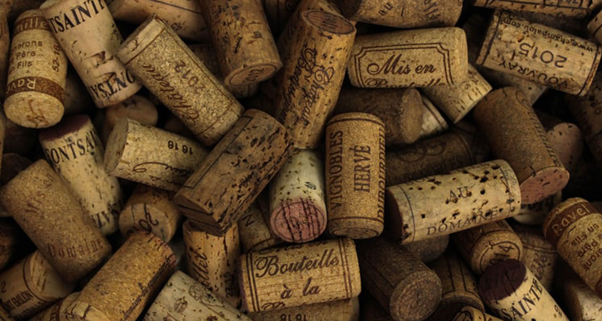
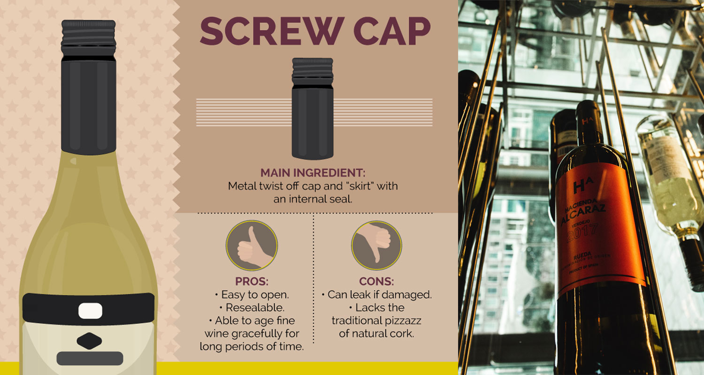
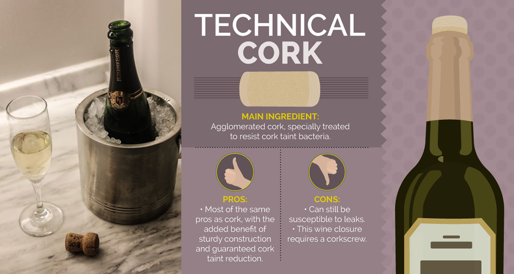
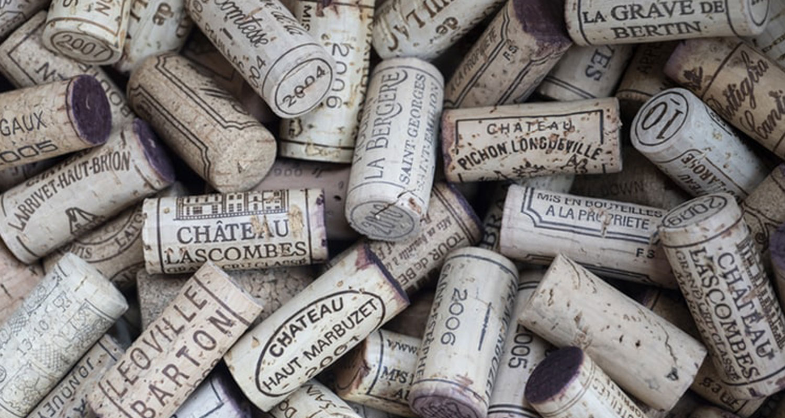
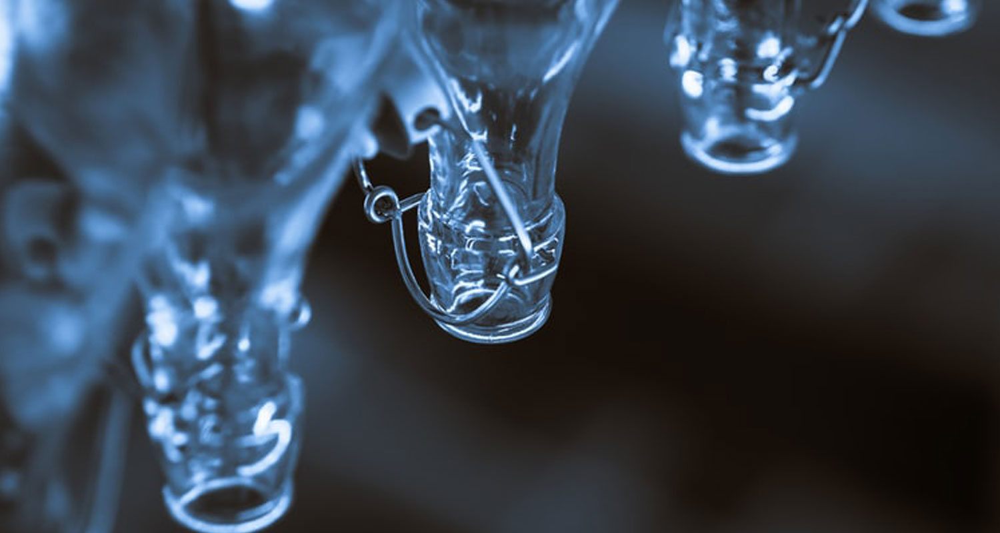

When it comes to wine buttons, you will probably think of cork. But there are many different types of cork and some of them are made of wood. Join Nier Fine Wines to learn about some of the most popular wine buttons and their advantages and disadvantages.
1. Cork
With the main material made from bark, mainly originating from Portugal.

The advantages of this cork type are:
- I have brought the classic color, has been tested over time and undergone many professional assessments.
- Cork cork is durable material and is 100% renewable when properly handled.
The cork is small but can resist the aging of wine by allowing a sufficient amount of air, making today's glasses better for decades and it's been associated with culture. enjoy the wine.
However, this type of button is very strict during storage. For example, to keep the humidity good so the button does not dry out, making it difficult to open, as well as not allowing air to get inside, which reduces the quality. This requires a dedicated open tool as well as an ingenious opening. In addition, the smell from cork and cork bacteria also makes cork a difficult material.
2. Screw Cap
Material is metal or plastic, covered with a brand mark, the vortex button has outstanding and new advantages compared to the traditional cork.

The biggest strength is that it is easy to open manually without the need for any specialized tools. In addition, the button can be closed in case of not being used up while ensuring good wine taste in a certain period of time.
On the other hand, the weakness of the cork-shaped button is the loss of the charm of a traditional cork - something many people always think: Wine with cork is a luxury wine.
3. Technical Cork

Technical cork was invented to improve the defects of a traditional cork. The cork is pressed and specially treated against bacteria that damage the cork, but retains the appeal and strengths of the traditional cork.
The weaknesses always have for wood buttons, they are easy to leak without opening process and always need specialized tools and open properly.
4. Synthetic Cork

Synthetic cork made from synthetic resin or organic polymers, pressed tightly. The synthetic cork is very similar to a natural cork, easily recyclable, destroys and retains a strong point of the natural cork - that is, it allows a sufficient amount of oxygen to make the wine taste better in the long run.
But still can't be replaced naturally when the synthetic cork does not guarantee that it will help to increase the wine life and make the wine more and more delicious for decades.
5. Glass Stopper

Made of glass material with a cushioning lining, the glass stopper is rated as elegant, easy to recycle and easy to open by hand. Also the glass stopper can easily seal and store unused wine in a short time
The weakness of this type of glass stopper is relatively heavy and more expensive. The issue of longevity for wine quality is also said to be lower than that of a traditional cork.
Each type of cork has different advantages and disadvantages, please grasp this information to know how to choose and use the right cork!